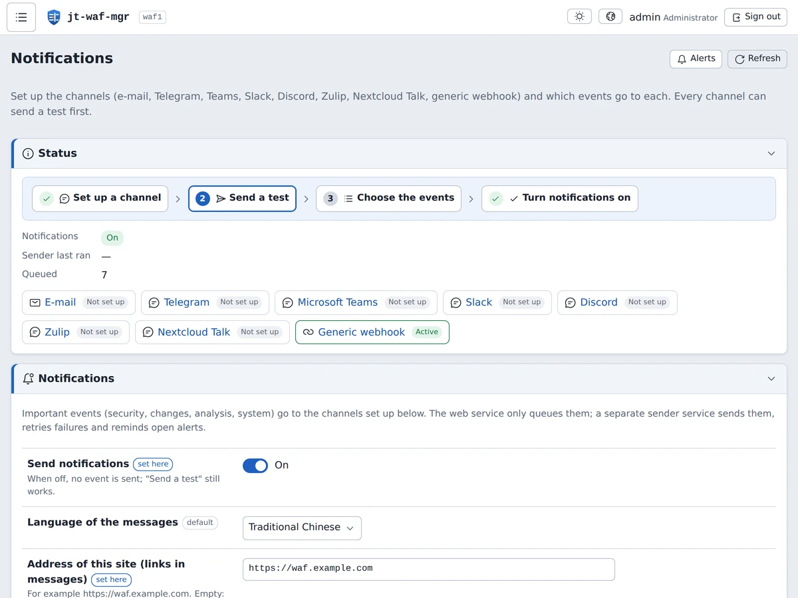

sudo mkdir -p /opt/jt-waf-mgr-install && cd /opt/jt-waf-mgr-install
V=0.5.54; B=https://github.com/jasoncheng7115/jt-waf-mgr/releases/download/v$V
for f in jt-waf-mgr-$V.tar.gz jt-waf-mgr-$V.tar.gz.sig release-key.pem; do sudo curl -fsSLO $B/$f; done
openssl dgst -sha256 -verify release-key.pem -signature jt-waf-mgr-$V.tar.gz.sig jt-waf-mgr-$V.tar.gz
sudo rm -rf current && sudo mkdir current && sudo tar xzf jt-waf-mgr-$V.tar.gz -C current --strip-components=1 && cd current
sudo ./install.sh
sudo jt-waf-mgr check
sudo jt-waf-mgr user add alice --role adminsudo cp /etc/jt-waf-mgr/nginx-vhost.conf.example /etc/nginx/sites-available/waf.example.com.conf sudo ln -s /etc/nginx/sites-available/waf.example.com.conf /etc/nginx/sites-enabled/ sudo nginx -t && sudo systemctl reload nginx
sudo install -D -m 644 /dev/null /etc/nginx/jt-waf-mgr/blocked-ips.conf
# include /etc/nginx/jt-waf-mgr/blocked-ips.conf;
sudo nginx -t && sudo systemctl reload nginx
cd /opt/jt-waf-mgr-install
V=0.5.54; B=https://github.com/jasoncheng7115/jt-waf-mgr/releases/download/v$V
for f in jt-waf-mgr-$V.tar.gz jt-waf-mgr-$V.tar.gz.sig; do sudo curl -fsSLO $B/$f; done
sudo rm -rf current && sudo mkdir current && sudo tar xzf jt-waf-mgr-$V.tar.gz -C current --strip-components=1 && cd current
sudo ./upgrade.sh --check
sudo ./upgrade.sh
sudo ./upgrade.sh --rollbackcd /opt/jt-waf-mgr-install/current sudo ./uninstall.sh sudo ./uninstall.sh --purge